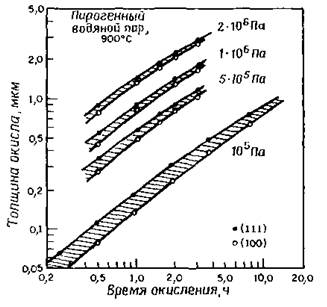
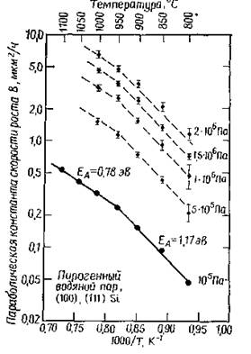
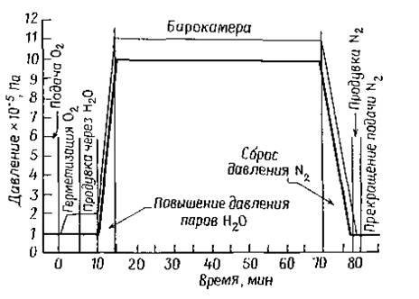

электронный
ресурс по учебной дисциплине 1-58 01 01 - "ИНЖЕНЕРНО-ПСИХОЛОГИЧЕСКОЕ ОБЕСПЕЧЕНИЕ ИНФОРМАЦИОННЫХ ТЕХНОЛОГИЙ"
|
||
| Оглавление | Программа | Теория | Практика | Контроль знаний | Об авторах | ||
|
Практика
ЛАБОРАТОРНАЯ РАБОТА №6 Исследование процессов окисления Цель работы: Изучить основные характеристики процесса окисления. Провести исследование зависимости толщины выращенной пленки SiO2 от времени проведения процесса. Написать программу и построить зависимости выходных параметров от входных. Теоретические сведения Окисление при повышенном давлении стало предметом исследования в начале 60-х годов. В настоящее время как экспериментальное, так и промышленное оборудование приспособлено для проведения окисления при повышенном давлении для изготовления приборов. В МОП-технологии такой процесс успешно применен для выращивания толстых изолирующих окисных слоев при формировании динамических запоминающих устройств с произвольной выборкой. Перспективный метод окисления при повышенном давлении в настоящее время находит все более широкое применение. Окисление — процесс отдачи электронов, с увеличением степени окисления. На рис. 1 показана зависимость толщины окисла от времени окисления во влажном кислороде при температуре 900 °С и различном давлении. Эти данные наглядно демонстрируют значительное ускорение процесса окисления при увеличении давления в системе. Анализ кинетики окисления при повышенном давлении усложняется в связи со следующими факторами: непрерывным увеличением давления в ходе его повышения до заданного; временными затратами, необходимыми для повышения давления; небольшими изменениями температуры в процессе повышения давления до заданного, а также по достижении этого давления на начальном этапе окисления; изменением парциального давления паров воды в процессе понижения давления и изменением толщины окисла от процесса к процессу и вдоль подложки. Для анализа данных, приведенных на рис.1, была использована линейно-параболическая модель. Параболическая константа скорости В прямо пропорциональна равновесной объемной концентрации окислителя в окисле С*, которая в свою очередь пропорциональна парциальному давлению окислителя в газовой фазе. Поэтому повышение давления водяных паров приводит к дополнительному увеличению скорости роста. Преимуществом окисления кремния при высоком давлении является также то, что этот метод позволяет выращивать слои термического окисла при относительно низких температурах в течение времени, сравнимого со временем, необходимым для обычного высокотемпературного процесса при атмосферном давлении. В связи с этим можно свести к минимуму процесс перераспределения предварительно введенной в подложку примеси. Проведение процесса при низкой температуре, кроме того, сводит к минимуму продольную диффузию, что имеет особое значение в свете современной тенденции снижения размеров формируемых приборов. Дополнительным преимуществом является устранение возможности образования окислительных дефектов. В случае проведения процесса окисления при высоких температурах повышенное давление значительно уменьшает время окисления.  Рисунок 1 – Зависимость толщины окисла от времени окисления подложек кремния с ориентацией поверхности (100) и (111) для пирогенного водяного пара при температуре 900º С и давления 2 МПа  Рисунок 2 – Зависимость параболической константы скорости роста окисла от 1000/Т для подложек кремния с ориентацией поверхности (100) и (111), окисленных при давлении пирогенного водяного пара (1, 5, 10, 15 и 20)*105 Па Линейная зависимость от давления была обнаружена как для линейной, так и для параболической констант скорости роста. На рис. 4.2 приведены результаты для параболической константы скорости роста, где прерывистые линии соответствуют 5-, 10-, 15- и 20-кратному увеличению параболической константы скорости роста по сравнению с атмосферным давлением. Как следует из графика, константа скорости пропорциональна давлению и, кроме того, при температуре ниже 900°С энергия активации имеет другое значение. Это может быть связано со структурными изменениями в окисле. Обычная температурно-временная диаграмма для процесса окисления при давлении 1 МПа приведена на рис. 4.3. Как пирогенные, так и барботажные системы могут обеспечить проведение процессов окисления во влажном кислороде при давлении до 2,5 МПа и температуре 1100°С. Для систем, использующих непосредственную подачу воды в окислительную камеру, отсутствуют проблемы, связанные с использованием водорода при высоких давлении и температуре. Однако при этом возникает необходимость строгого контроля за чистотой проведения процесса, поскольку качество используемой воды и средств ее подачи определяет качество водяных паров.  Рисунок 4.3 – Стандартный цикл окисления во влажном кислороде при давлении 1 МПа В настоящее время на стадии разработки находится оборудование для выращивания окислов в сухом кислороде при давлении до 70 МПа. Для того, чтобы определить скорость роста окисла, воспользуемся уравнением: (1) где (2)
(4) (5) ( – коэффициент диффузии; – константа скорости поверхностной химической реакции окисления кремния; – толщина окисла;
- равновесная объемная концентрация в окисле;
– парциальное давление в объеме газовой фазы; – постоянная Генри; Свойства окисных пленок. Хотя в литературе приводятся конкретные значения величин для различных параметров, отражающих свойства окислов кремния, совершенно очевидно, что эти свойства зависят от экспериментальных условий выращивания окисла. Например, коэффициент преломления пленок окисла, выращенного в сухом кислороде, уменьшается с увеличением температуры, достигая постоянного значения 1,4620 при температуре выше 1190°С. Согласно опубликованным данным, скорость травления термических окислов при комнатной температуре в HF (49%) составляет 100 нм/мин и меняется в зависимости от температуры и концентрации травителя. Кроме того, скорость травления зависит от плотности окисла и, следовательно, от температуры окисления. Эксперименты показывают, что окисные пленки, полученные при температуре 725°С и давлении 2 МПа, обладают, хотя для мышьяка были получены и более высокие значения (до 800 при температуре 1050 °С). Для галлия, который очень быстро диффундирует через окисел, приводимое значение коэффициента сегрегации составляет ~20. Задание для выполнения лабораторной работы Используя уравнение и данные таблицы, определите, сколько времени потребуется для выращивания плёнки SiO2 толщиной X мкм при температуре Т °С и давлении паров воды Y МПа.
Варианты заданий:
Порядок выполнения работы 1. Напишите программу, обеспечивающую решение задачи. 2. Постройте зависимости выходных параметров от входных. 3. Оформите отчет и защитите лабораторную работу. Содержание отчета 1. Цель работы. 2. Краткие теоретические сведения. 3. Решение задачи. 4. Код программы и скриншоты рабочих окон. 5. Зависимости выходных параметров от выходных. 6. Выводы по работе. Контрольные вопросы 1. Что представляет собой процесс окисление? 2. Где применяется процесс окисления? 3. Какие преимущества окисления кремния при высоком давлении? 4. Опишите стандартный цикл окисления во влажном кислороде? 5. Перечислите свойства окисных пленок? Практика
|
| (С) БГУИР |